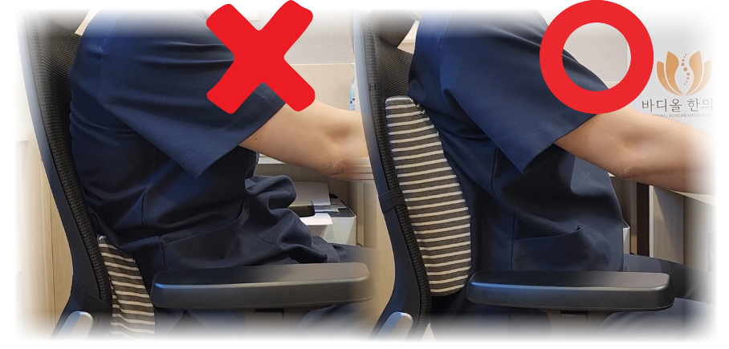

[腰部靠垫使用法 / 如何选择好椅子]
1. 正确的腰部靠垫使用法

- 靠垫必须紧贴在腰部最凹陷处（肚脐正后方）。
- 不要为了靠在垫子上而刻意将臀部后贴或过度向后仰腰。
- 核心在于使用靠垫后能舒适地放松，而不是强行制造腰部曲线。
- 与其选择过厚或过硬的靠垫，不如选择弹性适中、能自然支撑腰部防止后退的垫子。
- 身体各部位不应有紧张感，保持轻松放松的状态，但脊柱应处于正直的正确位置。
2. 如何选择好椅子
💡 BodyAll 的一句话：
“并没有所谓的‘特别的好椅子’。不给脊柱带来负担的椅子就是好椅子。”
“并没有所谓的‘特别的好椅子’。不给脊柱带来负担的椅子就是好椅子。”
- 即使不费力也能自然完成“骨盆滚动”的椅子就是好椅子。
- 坐上去应有上述“使用靠垫时腰部得到舒适支撑”的感觉。
- 最重要的推荐方式： 先掌握腰部靠垫的使用方法并学会骨盆滚动后，亲自试坐挑选。
一旦了解了健康的坐姿感，几十块钱的椅子也能成为最高级的椅子；但如果脊柱歪斜且只顾着怎么舒服怎么坐，即便几千块钱的椅子也只会成为毁掉脊柱的最差工具。